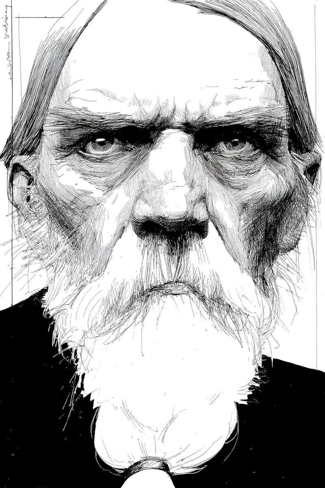

민호는 작은 마을에 살아요.
[Minho lives in a small town.]
민호 옆집에 한 할아버지가 살아요.
[An old man lives in the house next to Minho.]
사람들은 그 할아버지를 박 할아버지라고 불러요.
[People call that old man Grandpa Park.]
박 할아버지는 키가 크고 수염이 하얘요.
[Grandpa Park is tall and his beard is white.]
눈썹은 아주 굵어요.
[His eyebrows are very thick.]
그리고 눈은 무서워요.
[And his eyes are scary.]
박 할아버지는 웃지 않아요.
[Grandpa Park does not smile.]
항상 화가 난 얼굴이에요.
[He always has an angry face.]
동네 아이들은 박 할아버지를 무서워해요.
[The neighborhood children are afraid of Grandpa Park.]
아이들은 박 할아버지를 보면 도망가요.
[When the children see Grandpa Park, they run away.]
“저 할아버지는 무서워.”
[”That old man is scary.”]
“말도 하지 마.”
[”Don’t even talk to him.”]
한 아이가 말했어요.
[One child said.]
“박 할아버지가 옛날에 크게 화를 냈대.”
[”I heard Grandpa Park got very angry a long time ago.”]
그래서 아이들은 더 무서워했어요.
[So the children were even more afraid.]
민호도 박 할아버지가 무서웠어요.
[Minho was also afraid of Grandpa Park.]
그런데 한 가지 이상한 일이 있어요.
[But there is one strange thing.]
밤마다 박 할아버지는 밖에 나가요.
[Every night Grandpa Park goes outside.]
박 할아버지는 코트 안에 무언가를 숨겨요.
[Grandpa Park hides something inside his coat.]
민호는 그것이 궁금했어요.
[Minho was curious about that.]
‘할아버지는 밤에 어디에 갈까?’
[’Where does the old man go at night?’]
‘코트 안에 무엇이 있을까?’
[’What is inside his coat?’]
민호는 따라가고 싶었어요.
[Minho wanted to follow him.]
하지만 조금 무서웠어요.
[But he was a little scared.]
민호는 용기를 냈어요.
[Minho gathered his courage.]
어느 날 밤, 민호는 박 할아버지를 따라갔어요.
[One night, Minho followed Grandpa Park.]
민호는 조용히 걸었어요.
[Minho walked quietly.]
박 할아버지는 골목으로 들어갔어요.
[Grandpa Park went into an alley.]
골목은 어둡고 조용했어요.
[The alley was dark and quiet.]
민호는 벽 뒤에 숨었어요.
[Minho hid behind a wall.]
그때 민호는 고양이들을 봤어요.
[Then Minho saw cats.]
작은 고양이 세 마리가 있었어요.
[There were three little cats.]
고양이들은 박 할아버지를 기다렸어요.
[The cats were waiting for Grandpa Park.]
박 할아버지는 코트에서 음식을 꺼냈어요.
[Grandpa Park took food out of his coat.]
그리고 고양이들에게 음식을 줬어요.
[And he gave the food to the cats.]
“많이 먹어라.”
[”Eat a lot.”]
박 할아버지의 목소리는 부드러웠어요.
[Grandpa Park’s voice was soft.]
박 할아버지는 웃었어요.
[Grandpa Park smiled.]
민호는 깜짝 놀랐어요.
[Minho was very surprised.]
무서운 할아버지가 웃었어요.
[The scary old man smiled.]
그 얼굴은 따뜻했어요.
[That face was warm.]
그때 고양이 한 마리가 “야옹” 하고 울었어요.
[Just then one cat meowed “meow.”]
민호는 깜짝 놀라서 소리를 냈어요.
[Minho was startled and made a sound.]
박 할아버지가 뒤를 봤어요.
[Grandpa Park looked behind him.]
민호와 박 할아버지의 눈이 마주쳤어요.
[Minho’s and Grandpa Park’s eyes met.]
민호는 무서웠어요.
[Minho was scared.]
하지만 박 할아버지는 화를 내지 않았어요.
[But Grandpa Park did not get angry.]
“너도 고양이를 좋아하니?”
[”Do you like cats too?”]
박 할아버지가 조용히 물었어요.
[Grandpa Park asked quietly.]
민호는 천천히 고개를 끄덕였어요.
[Minho slowly nodded.]
박 할아버지는 민호에게 음식을 줬어요.
[Grandpa Park gave food to Minho.]
“그럼 같이 주자.”
[”Then let’s feed them together.”]
민호는 고양이에게 음식을 줬어요.
[Minho gave food to a cat.]
고양이는 민호의 손을 핥았어요.
[The cat licked Minho’s hand.]
민호는 처음으로 웃었어요.
[Minho smiled for the first time.]
박 할아버지도 웃었어요.
[Grandpa Park smiled too.]
“이 고양이들은 내 친구야.”
[”These cats are my friends.”]
“이 노란 고양이 이름은 노랑이야.”
[”This yellow cat’s name is Norangi.”]
“나는 혼자 살아.”
[”I live alone.”]
“그래서 밤마다 여기에 와.”
[”So I come here every night.”]
민호는 이제 알았어요.
[Now Minho understood.]
박 할아버지는 무서운 사람이 아니에요.
[Grandpa Park is not a scary person.]
박 할아버지는 따뜻한 사람이에요.
[Grandpa Park is a warm person.]
다음 날, 민호는 집에서 음식을 가져왔어요.
[The next day, Minho brought food from home.]
민호는 고양이들에게 음식을 줬어요.
[Minho gave the food to the cats.]
그날 밤부터 민호와 박 할아버지는 친구가 됐어요.
[From that night, Minho and Grandpa Park became friends.]
이제 민호는 밤마다 박 할아버지와 고양이들을 만나요.
[Now every night Minho meets Grandpa Park and the cats.]
무서운 얼굴 뒤에는 따뜻한 마음이 있었어요.
[Behind the scary face, there was a warm heart.]